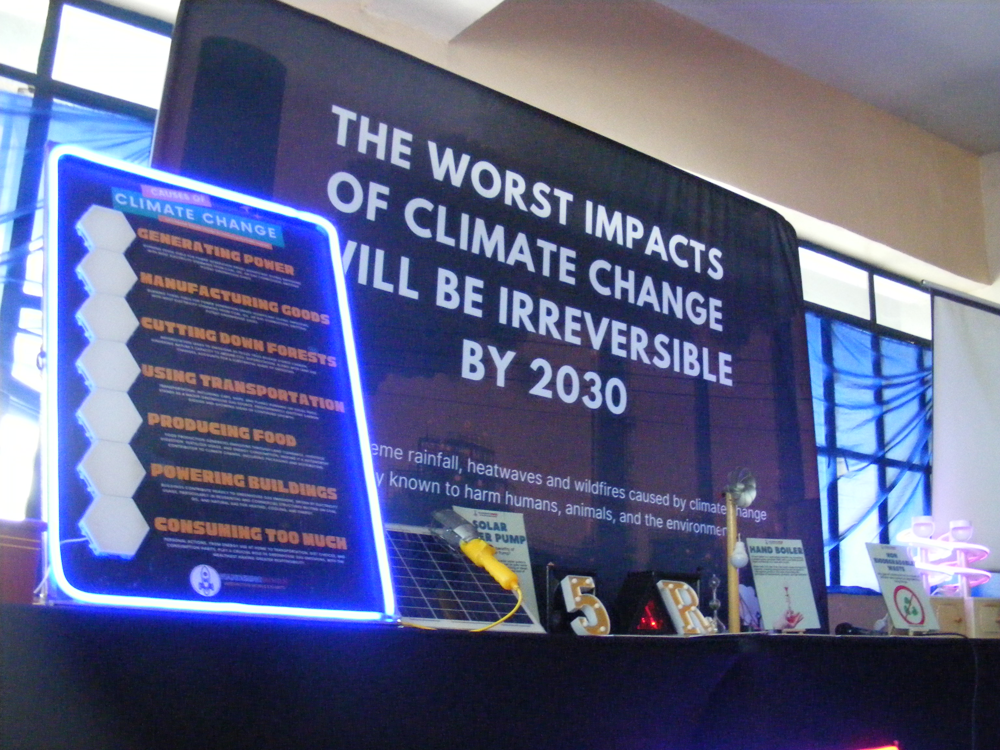

STEM - 12 - 08 Inventiveness

Wandering Minds Mobile Science Exhibit
More Works HereMarch 15,2024
This is the day we take a look at a mobile science fair from wandering minds
First Exhibit
The first exhibit is all about why Mars is the choosen planet to be explored by the scientist to be the next earth. We were taught that mars has some characteristics similar to our earth. We discovered that mars was once has water sources but is now unavailable because of certain event that happened in the pass.
Scientist have been studying Mars since the 1960s. Nasa (National Aeronautics and Space Administration) had sent 6 rovers to Mars to explore and study the planet without risking lives of human astronaut. 5 rovers were named as;
- Sojourner - July 1997
- Spirit - January 2004
- Opportunity - January 2004
- Curiosity - August 2012
- Perseverance - February 2021

Second Exhibit
The second exhibit is about universal knowledge. This exhibit uses a dome where inside has a 180 degree projector which allow the audience to see the projected videos in real time. We weren't allowed to take pictures or videos inside the dome for privacy purposes of what is shown inside. The videos shown in the dome is all about the universe, nebulas, planets in the solar system, constellations, and stories behind some of the cosnstellation. Outside the dome there is a stall where you can buy your souvenir.
Souvenirs ;
- Keychains
- Skeletal structure of a dinosaur
- Bracelets
- Stickers

Last Exhibit
The third exhibit explores and explain about the climate change our planet is currently experiencing. The climate change will be irreversible in 2030. This part of the exhibit also teaches the audience what are the reasons of the climate change and how we can still lessen or eradicate it. Aside from the discussion about climate change, this exhibit also has some displays and interactions to play with.
Interactions involves;
- Kinetic electricity generator
- Handboiler
- Electricute relay
- Mini Windturbine
- Inifinity Mirror